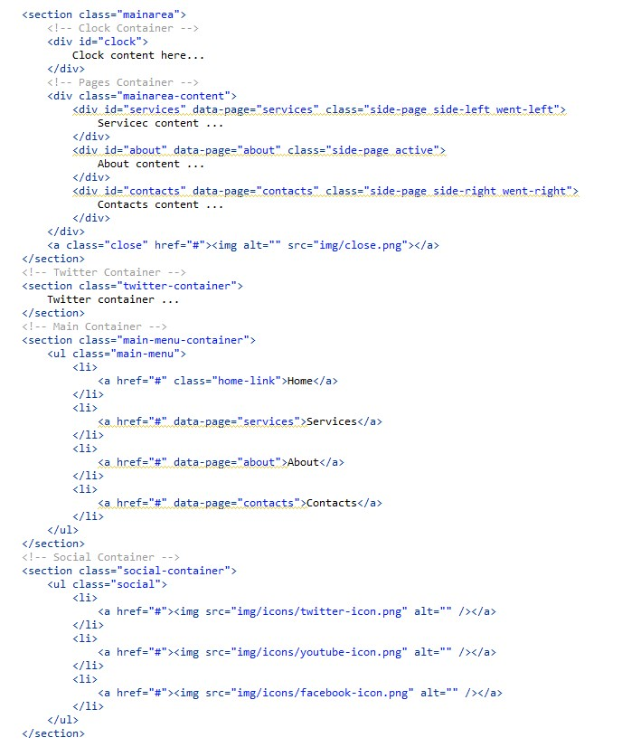
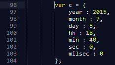
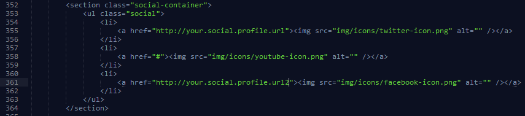

Created: x/x/xxxx
By: Your Name
Email: youremail@yourdomain.com
Thank you for purchasing my theme. If you have any questions that are beyond the scope of this help file, please feel free to email via my user page contact form here. Thanks so much!
This theme has a fixed layout with one column. All information in the main content area is located in the div class mainarea. The general template structure remains the same for the hole template. The general structure is given below.
At first, you need to set date and time when your site starts to work. Please open folder js and find file clock.js. In this file you need to change date parameters on line 96.

Now let's social links container. You can find it on line 352.

You simple need to place your social profile url (including http://) insted #.
If you choose gallery-style background you need to know how to upload your own images.
Open folder img/bg/. You can see 6 images there. Just simply place there your images, insted of the existing and change their names to bg1 - bg6.jpg
For changing video background you need to open file
You can use dark color scheme. For that you need to add this code to <head> section:
<link rel="stylesheet" type="text/css" href="css/dark-theme.css">
Please select one of Under Construction page styles (video, clouds, gallery), upload all folders, favicon and selected you html-file to folder on your server with using FTP. Reneme html-file index-with-....html to index.html.
.
Fully responsive.
Clock is a fully responsive theme, which means it adapts to the screen resolution of the device it is being viewed on.
Page navigation.
Apply the 'main-menu' function to a container element.
Clicking on any links within the container or scrolling will cause an animated scroll to the element whose ID is identified by that link's "hash" (if it exists).
The currently links are used in the nav bar, navigation between sections and for auto nice scroll from one section to another,
when the end of section is reached.
The links for scrolling from one section to another are fixed and are always visible to the user.
Full screen background.
Section has its background: video background with animated gradient mask, image background with gradient mask and color background.
Video screen background.
Added an option to connect the video from external resources. Exemple index-with-video-youtube.html
Cloud screen background.
Separate option with clouds on the screen. Example of connection to a file index-with-cloud.html
I'm using two CSS files in this theme. The first one contains general design of the theme. Keep in mind, that these values might be overridden somewhere else in the files. The file is separated into sections. You can find "Table of contents" at the top of main.css
The second one contains responsive styling of the theme.
So, to ensure that your new styles are applied, make sure that they carry enough "weight" and that there isn't a style lower in the CSS file that is being applied after yours.
If you would like to edit a specific section of the site, simply find the appropriate label in the CSS file, and then scroll down until you find the appropriate style that needs to be edited.
Any social links that are placed within the single blog section have 32px font size and are of green color. If you would like to edit the display of these links, find the following section in the style sheet:
.social a {
change styles here:
}
This theme imports three Javascript files.
Once again, thank you so much for purchasing this theme. As I said at the beginning, I'd be glad to help you if you have any questions on this theme. No guarantees, but I'll do my best to assist. If you have more general question related with the themes on ThemeForest, you may find the answer visiting the forums and asking your question in the "Item Discussion" section.
Your Name